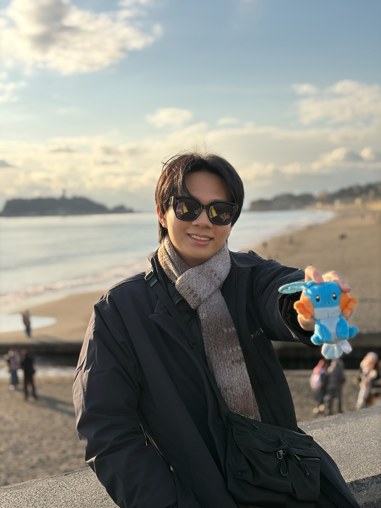

車禍慰撫金計算機完整使用說明｜真實判決查詢、PDF報告下載
數字來自真實法院判決，你可以直接對照同類傷勢的判決，找到跟自己情況最接近的案例。完整說明使用方式、慰撫金光譜怎麼看、PDF報告如何運用。

執業後發現慰撫金是最難開口的數字，沒有固定公式，除了憑感覺，難道沒有更好的方法嗎？
開太低委屈和解，開太高談判破局，繞一圈進法院拿的反而更少。
我很喜歡用證據說話，但慰撫金沒有收據可以附。所以使出渾身解數，想盡辦法讓判決來當後盾。
工具免費、資訊也免費，但我相信裡面的資訊對需要的你有點幫助，有需要的話隨時可以用 LINE 找我。